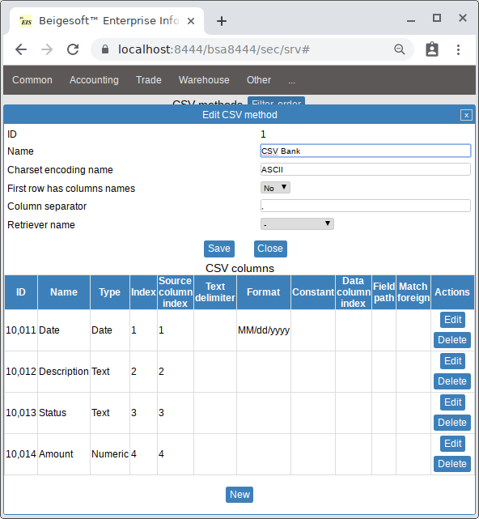
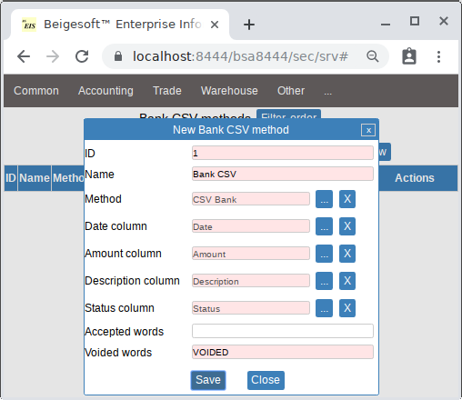
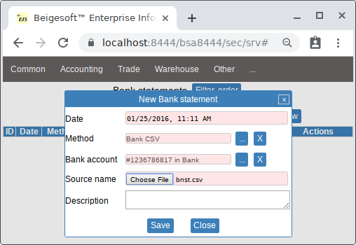
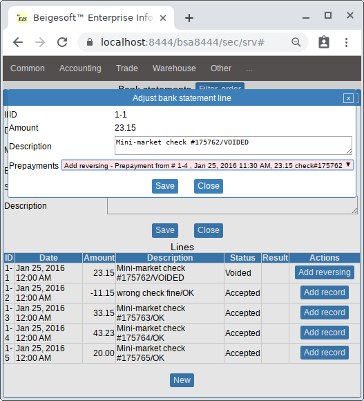
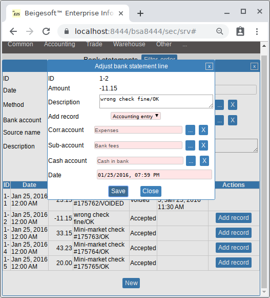
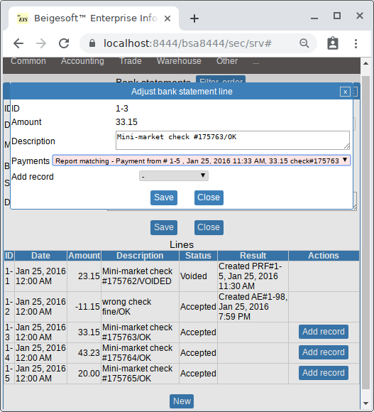
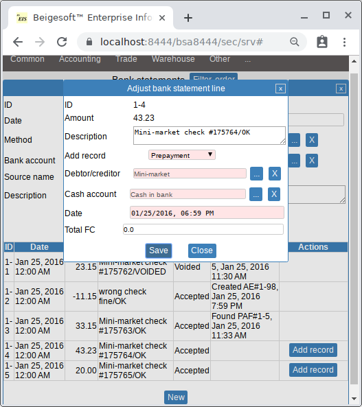
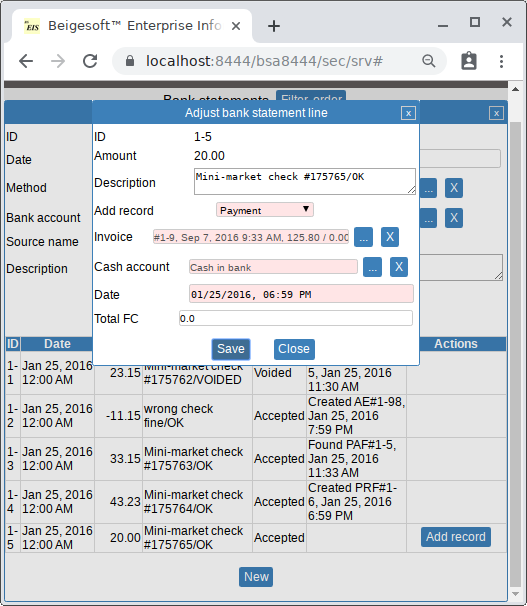
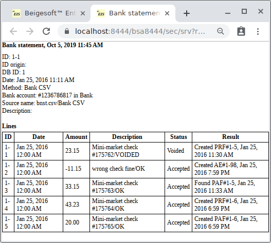
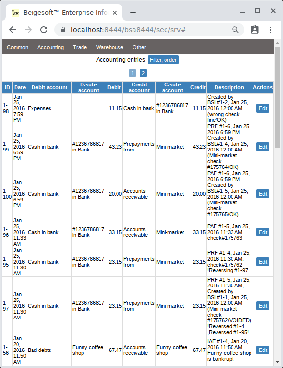

Import bank statement from CSV file. Semi-automatic bank reconciliation.
Keywords: Import bank statement from CSV file, semi-automatic bank reconciliation.
Beigesoft™ EIS allows you to:
- import bank statement entries from a CSV file.
- if an entry has status "VOIDED" (canceled), then the matching entries (if found) will be listed for reversing (canceling)
- entries with other status allow to create new records, the matching entries (if found) will be listed anyway to prevent duplicates
Example of semi-automatic bank reconciliation.
Assume Bob received two prepayments from Mini-market on Jan 25, 2016, it's a check#175762 for 23.15USD, and a check#175763 for 33.15USD. Bob posted these checks into Beigesoft™ EIS.
Bob received on Jan 26 a bank statement, its CSV file is:
01/25/2016,Mini-market check #175762,VOIDED,23.15,wrong signature 01/25/2016,wrong check fine,OK,-11.15, 01/25/2016,Mini-market check #175763,OK,33.15, 01/25/2016,Mini-market check #175764,OK,43.23, 01/25/2016,Mini-market check #175765,OK,20.00,That is check#175762 wasn't accepted, there is additional fee 11.15, check#175763 is already posted, and there are two other checks that Bob hasn't posted yet.
First, Bob created a "CSV Method" for that file:

its fields are:
- Column separator - comma default
- Charset name - file encoding, for English countries it's usually ASCII, international friendly systems use UTF-8, anyway, ask your bank about this
- Has header - means if the first row consist of column names (here is not)
- name - any suitable name
- data format - here used only for Date column, string "MM/dd/yyyy" means USA standard, "dd/MM/yyyy" is the most used standard, for more details see https://docs.oracle.com/javase/7/docs/api/java/text/SimpleDateFormat.html
- type - "Date" for date columns, "Text" for most others columns, "Numeric" for amount column
- index - imported column index, not all columns might be imported (part of them might be omitted), e.g. if you want to omit column status, then columns "Date,Description,Amount" will have indexes: "1,2,3"
- index in source - imported column index in source file, not all columns might be imported (part of them might be omitted), e.g. if you want to omit column status, then columns "Date,Description,Amount" will have indexes: "1,2,4"
- Text delimiter - cell's string value delimiter, e.g. quote for strings that contains column separator
01/25/2016,"Mini-market check #175762, wrong signature",VOIDED,23.15,wrong signature 01/25/2016,"wrong check fine",OK,-11.15,
Columns of type "Numeric", i.e. decimal numbers, use scientist standard by default - dot is decimal separator without decimal group separator, e.g. number "12654865.45". If your file has decimal numbers represented in a different standard, then you should set this format in the "Data format" field according to this pattern:
[decimal-separator],[decimal-group-separator]There are three special words for a separator value:
- SPACE
- COMMA
- NONE
Examples:
.,NONE is default format, e.g. "112523.24", it's an analog of the empty value COMMA,- e.g. "112-523,24" COMMA,SPACE is the European standard, e.g. "112 523,24" COMMA,NONE e.g. "112523,24"*in the case of using COMMA decimal separator, it should be either other than comma column separator, or a number should be braced with the text separator, e.g. quoted.
Then Bob added a new "Bank CSV method":

here the fields mean:
- CSV method, required
- Date column from chosen method, required
- Amount column from chosen method, required
- Description column from chosen method, optional
- Status column from chosen method, optional, if you want (and CSV has this information) to cancel already created records
- Voided words - comma separated words from status column that means that record was voided, optional, if you want (and CSV has this information) to cancel already created records, here word "VOIDED" in the file means canceling
- Accepted words - comma separated words from status column that means that record wasn't accepted, optional, here is empty
Then Bob created a new Bank Statement:

Then Bob pressed the "Add reversing" button in the line#1 for reversing the prepayment#1-2 because of the wrong check:

For the entry#2 Bob created a new accounting entry that reports the regular business expense "bank fees":

For the entry#3 Bob reported "found matching payment#1-3":

For the entry#4 Bob created a new prepayment:

Finally, Bob created a new payment for entry#5:

The bank statement report is:

The accounting records on Jan 25 are:
